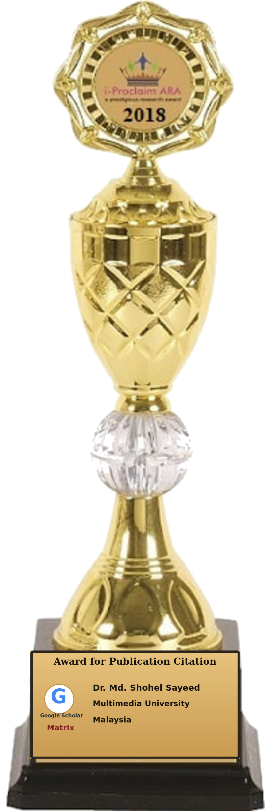

i-Proclaim Research Awards
Celebrating responsible publication, meaningful research influence and scholarly work that contributes to knowledge.
Explore awards →Research Awards
Each award category follows its own scope, eligibility criteria and evaluation process.
Publication Excellence
Recognizing quality, integrity and meaningful scholarly contribution.
View details →🏆Publication Citation
Recognizing the responsible influence of published research.
View details →▤Book Awards
Celebrating scholarly books that advance knowledge and understanding.
View details →➤Apply for an Award
Submit an achievement for review under the relevant award category.
View details →Simple 3-Step Process
Select an Award
Choose Publication Excellence, Publication Citation or the i-Proclaim Book Award.
Provide Applicant Information
Tell us about the applicant, institution and relevant scholarly work.
Share Supporting Evidence
Submit verifiable evidence for independent evaluation.

Eligibility Criteria
Understand the scope, evidence requirements and conditions for each category.
🏆What Do Winners Receive?
Learn how successful candidates are recognized and documented.
◇Events & Research Meet
Discover opportunities for research exchange, connection and participation.